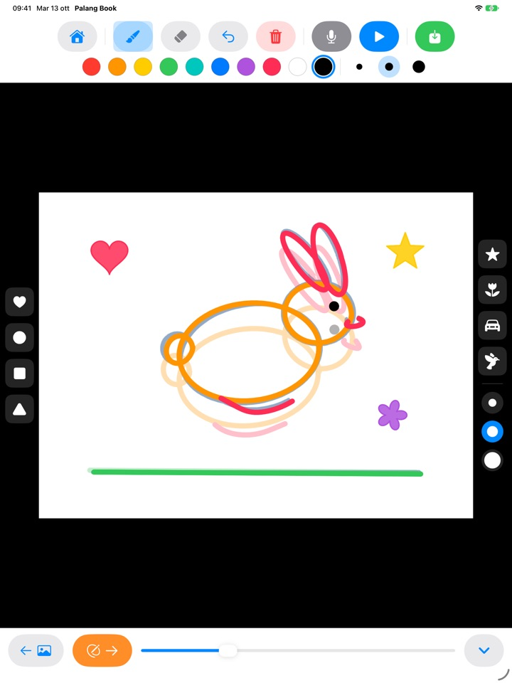
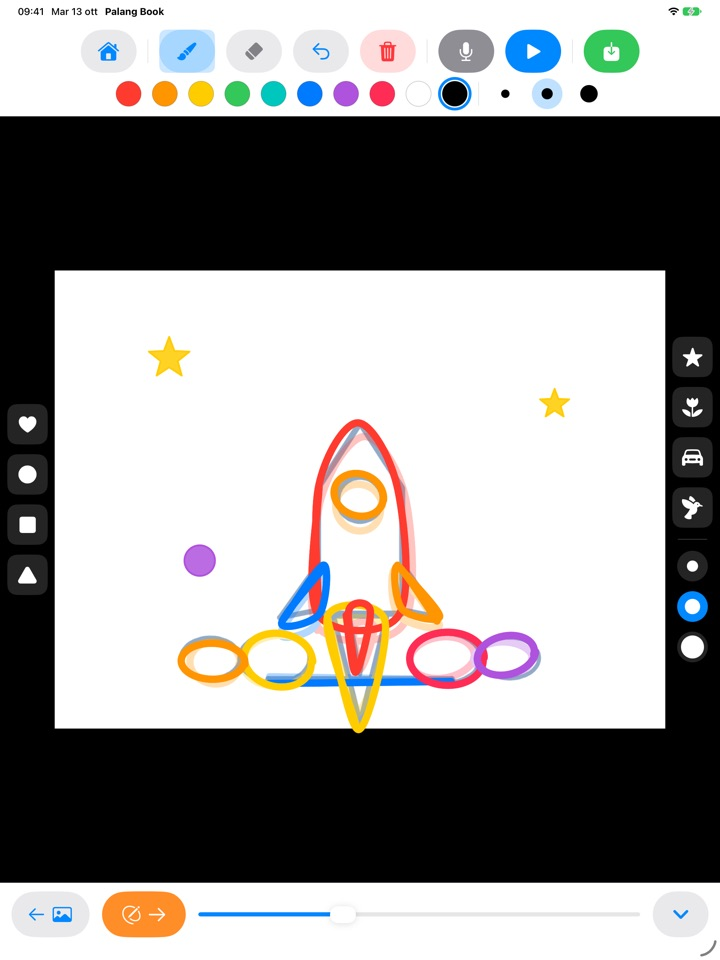
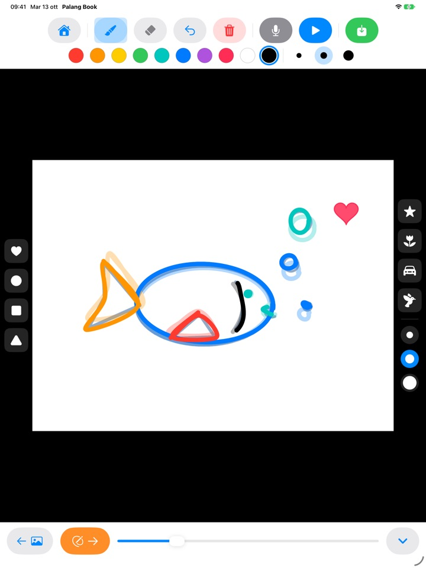
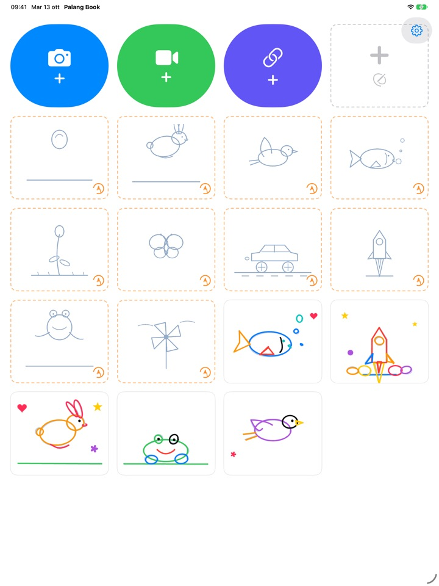

Ricalca le linee.
Guardale muoversi.
Tuo figlio ricalca un disegno guida leggero, una pagina alla volta. Premi play: la guida sparisce e restano solo i suoi tratti, che si muovono. Tutti i pulsanti sono immagini, così può fare da solo anche prima di saper leggere.
Per iPad. Tre serie da ricalcare sono gratis.

Disegna qualche pagina
Fai un disegno, poi tocca la freccia arancione per passare alla pagina successiva. La pagina precedente si intravede in trasparenza. Dopo due o tre pagine, tocca il pulsante play blu.
Un bel disegno merita di non restare fermo, vero?
Un'animazione vuol dire disegnare quasi la stessa immagine tante volte, cambiandola di pochissimo, e da soli i bambini non sanno da dove cominciare. Palang Book mette sotto un disegno guida leggero che contiene già il movimento: basta seguire la linea. Appena premono play, il loro disegno si muove.
Segui la linea, ed ecco l'animazione
Una palla che rimbalza, un coniglietto che salta, un uccellino che vola, un pesce che nuota, un fiore che sboccia, una farfalla, un'auto da corsa, un razzo, una rana e una girandola. Ogni serie ha circa 20 pagine guida.
La pagina precedente si intravede in trasparenza, così la successiva viene facile, e in riproduzione la guida sparisce: si muove solo il disegno di tuo figlio.

Timbri e dieci colori
Con un tocco si timbrano cuori, cerchi, quadrati, triangoli, stelle, fiori, macchinine e uccellini. Timbri e pennelli hanno tre misure ciascuno, e i colori sono dieci.
Con la gomma e il pulsante annulla gli errori si sistemano subito. Si disegna con il dito o con Apple Pencil.

Sui tuoi video o su un foglio bianco
Apri un video girato da te o uno dall'app Foto e ricalca direttamente sopra. Nascondendo lo sfondo, scorrono solo le scene disegnate, una dopo l'altra su un foglio bianco. C'è anche il flipbook su foglio bianco, senza nessuna guida.
Tocca il microfono per registrare la voce di tuo figlio insieme all'animazione, poi salva il lavoro finito come video in Foto e condividilo con la famiglia.

Si comincia in tre passi
- 1
Tocca una scheda guida
Le schede con il bordo arancione tratteggiato nella schermata iniziale sono quelle da ricalcare.
- 2
Disegna e gira pagina
La freccia arancione porta alla pagina successiva.
- 3
Premi play
Tocca il pulsante play blu e il disegno si muove.
A cosa servono i pulsanti
- Scheda arancione tratteggiata
- Inizia a ricalcare un disegno guida
- Scheda grigia tratteggiata
- Flipbook su foglio bianco
- Fotocamera blu
- Disegna su un video che giri tu
- Video verde
- Apri un video dall'app Foto
- Link indaco
- Incolla il link a un file video
- Freccia arancione
- Pagina successiva
- Play blu
- Riproduce l'animazione, toccalo di nuovo per fermarla
- Freccia curva
- Annulla l'ultimo tratto
- Cestino rosso
- Cancella tutta la pagina (con annulla la recuperi)
- Microfono
- Registra la voce mentre l'animazione si ripete
- Icona video
- Nasconde lo sfondo video (rosa a righe significa solo disegni)
- Salva verde
- Salva in Foto come video
Per eliminare un lavoro, tieni premuta la sua scheda nella schermata iniziale. Vengono cancellati anche i disegni, la registrazione e il video importato.
Tanto da provare gratis. L'Accesso a vita, se vi piace.
Gratis
- 3 serie da ricalcare (palla, coniglietto, fiore)
- Fino a 3 lavori conservati
- 1 video importato
- Flipbook su foglio bianco fino a 10 pagine
- Registrazione della voce fino a 15 secondi
- Timbri, colori, pennelli e salvataggio in Foto
Accesso a vita
- Tutte le serie da ricalcare, comprese quelle future
- Nessun limite a lavori, pagine, video e tempo di registrazione
- Niente scheda di Palang Book alla fine dei video salvati
Un solo acquisto, non un abbonamento. Con In famiglia funziona su tutti gli iPad di casa.
I video salvati gratis terminano con una breve scheda di Palang Book. Se usavi Palang Book prima che esistesse l'Accesso a vita, hai già tutto sbloccato.
Domande frequenti
Come funzionano i disegni guida?
Le linee azzurro chiaro sono la guida. Tuo figlio ci ripassa sopra e, quando premi play, la guida sparisce e si muovono solo i suoi tratti. Dopo circa 20 pagine l'animazione è pronta.
Voglio riprodurre e salvare solo il disegno, senza il video.
In un lavoro con video, tocca l'icona video nella barra degli strumenti in alto finché diventa rosa a righe. Da quel momento riproduzione e salvataggio mostrano solo il disegno su sfondo bianco. Vengono riprodotte solo le scene disegnate, quindi bastano pochi disegni su un video lungo per ottenere una breve animazione.
Dove finisce il video completato?
Tocca il pulsante verde di salvataggio all'estremità destra della barra: un video mp4 viene salvato in Foto. La prima volta che salvi, consenti l'accesso alle foto.
Come si aggiunge la voce?
Tocca il microfono per registrare mentre l'animazione si ripete, poi tocca stop per finire. Se registri di nuovo, la nuova registrazione sostituisce la precedente. La voce viene inclusa quando salvi il video.
Il link di un video non si apre.
Controlla la connessione a Internet e verifica che l'indirizzo porti direttamente a un file video (che finisce con .mp4 o simili). I link alle pagine dei siti di condivisione video non si possono aprire. Usa video girati da te o liberamente utilizzabili.
Il palmo della mano lascia dei segni.
La freccia curva toglie l'ultimo tratto e il cestino rosso cancella tutta la pagina (con annulla la recuperi). Se succede spesso, scrivici e ti aiutiamo.
Perché c'è una moltiplicazione prima della schermata di acquisto?
Perché i bambini non ci arrivino da soli. Quando un bambino tocca qualcosa di bloccato, compare un grande lucchetto con l'invito «Fallo vedere a un adulto», e la schermata di acquisto si apre solo dopo che un adulto ha risolto una moltiplicazione.
Come ripristino l'acquisto?
Tocca l'ingranaggio in alto a destra nella schermata iniziale, scegli Accesso a vita, rispondi alla domanda per adulti e tocca Ripristina acquisti. Devi aver effettuato l'accesso con lo stesso account Apple usato per l'acquisto.
Come invio un feedback dall'app?
Tocca l'ingranaggio nella schermata iniziale e scegli Invia feedback. Puoi allegare uno screenshot e lasciare nome ed email se desideri una risposta. Ti chiediamo che il feedback venga inviato da un genitore.
Raccogliete dati su mio figlio?
No. Palang Book non raccoglie alcun dato personale, e disegni e registrazioni restano sul tuo iPad. Trovi tutti i dettagli nell'Informativa sulla privacy.
Domande o problemi? Scrivi a mizzking75@gmail.com. Di solito rispondiamo entro 2 o 3 giorni.